Tata
Silla cuádruple · 08:30–17:00
Playground
Tokens, componentes y patrones probados para Forms, dashboards, pantallas y correos. Nada aquí es decoración: todo se copia.
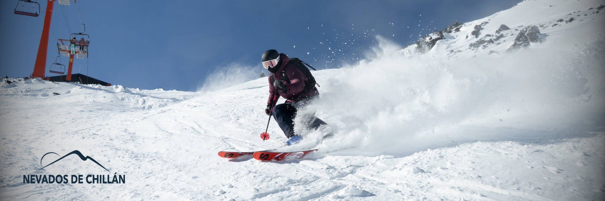
Temporada · Invierno 2026
Azules de marca + grises fríos de una sola familia. El único cálido es el cobre. Clic en cualquier muestra para copiar el hex.
Andariveles 8/12
--text-display · clamp(2.4rem, 1.4rem + 4vw, 4.2rem) · Montserrat 800
Pistas abiertas por zona
--text-h2 · clamp(1.5rem, 1.2rem + 1.4vw, 2.1rem) · 700
El reporte de hoy incluye 12 pistas de bike park con estado, horario y observaciones del operador.
--text-body-size · 0.95rem / 1.55 · 400
--brand-navy: #00334e; --copper-500: #c96f2e;
--font-mono · solo código y tokens
radio · sm 8px · md 12px · lg 16px · pill 999px
shadows · 3 niveles teñidos al fondo, nunca negro puro
space · 4 8 12 16 24 32 48 64 96 — solo estos 9 valores
motion · dur 160/280/650 · ease-out cubic-bezier(.32,.72,0,1) · pasa el mouse: 1 micro, 2 estándar, 3 reveals
Negros sobre claro, blancos sobre oscuro o color, dificultad con color propio, combos del bike park y montaña por defecto. Tamaños fijos, nunca deformar.
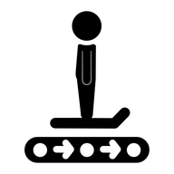
magiclift · 24–28px · negros sobre claro · al lado del nombre
doble
triple
cuádruple
arrastre
magicblancos · mismo set · swap por tema con data-dark-src
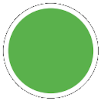
principiante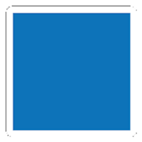
intermedio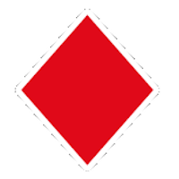
avanzado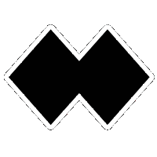
expertodificultad · 20px · sirven en ambos temas, sin variante
combos · 8 piezas · "DIFICULTAD_TIPO", con clásico en su defecto
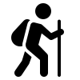
randonée patín tubing tirolesa motos debutantes montaña ★act · 24px · sin mapeo → montaña (igual que email y PDF)
clima · negros 24px · los usa NivologiaForm (la sección Clima usa sol/nieve por temporada)
sizes · 16 mínima funcional · 20 dif · 22 header Forms · 24 lift/act · 28 display
Un radio (pill en acciones), un acento por contexto y press real en :active.
btn · radius pill · padding 12px 22px · Montserrat 700 · press :active scale(.98)
El mismo vocabulario en pills, tarjetas de captura y tablas. Los colores reemplazan el texto como indicador principal.
pill · 11px/700 · radius pill · padding 4px 12px · nowrap — vocabulario fijo
8/10 abiertos
Tata
Silla cuádruple · 08:30–17:00
Curvitas
Intermedio · Técnico · Bike park
Cascada I
Arrastre · Viento fuerte
dbar + ck · barra 32px con el estado · chips 3 col · min-height 46px · orden Abierto / En espera / Cerrado
La barra ancha lleva el estado escrito: la tarjeta no repite pills ni chips. Solo lectura, sin interacción. Hover muestra la foto al 30% con gradiente que protege el texto — entra rápido, sale lento. El glow pulsante vive solo en abierto.
Tata
Silla cuádruple · 08:30–17:00
Curvitas
Intermedio · Técnico
Cascada I
Arrastre
dcard · barra 32px · texto vertical 8px · foto 30% al hover (in 600ms / out 1800ms) · glow pulsante solo en abierto
La elevación comunica jerarquía: si todo flota, nada flota.
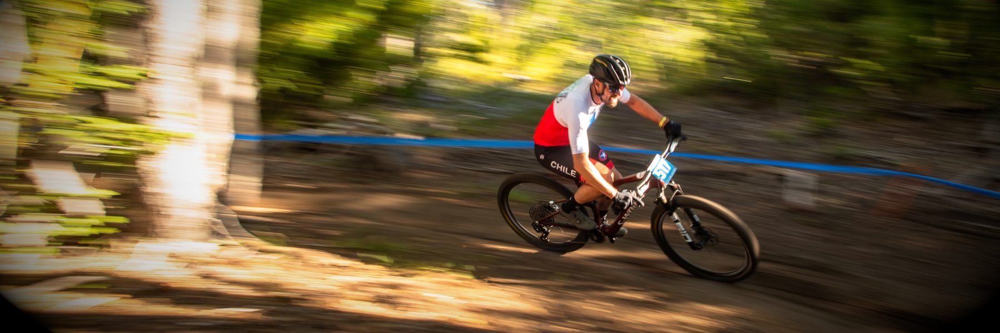
Bike park · Verano
Refugio y Tata operando de 09:00 a 17:00 con 3 circuitos fluidos nuevos.
8/10
Andariveles abiertos
−4°C
Cumbre 2400 m
“El parte sale solo cuando los datos están completos.”
— Operaciones de MontañaLa captura operatoria es una tarjeta por ítem: barra de estado al costado, chips de estado táctiles y campos con etiqueta arriba. Estas tres tarjetas son la anatomía real de InfraForm, con tabs por sección.
Curvitas
Intermedio · Técnico · Zona media
Tata
Silla cuádruple
Observaciones
| Andarivel | Tipo | Horario | Estado |
|---|---|---|---|
| Tata | Silla cuádruple | 08:30–17:00 | Abierto |
| Refugio | Silla triple | 09:00–17:00 | Abierto |
| Cascada I | Arrastre | — | Cerrado |
| Otto | Silla doble | — | En espera |
Mostrando 4 de 4 · Temporada Invierno 2026
Lo que toda app necesita y nadie diseña dos veces: confirmaciones destructivas, controles segmentados, rangos de fecha y los tres estados de datos (vacío, cargando, error).
El modal vive en un overlay fijo y se cierra con Escape o clic afuera. La acción destructiva exige checkbox: sin tildar, no hay botón.
Dos vistas, un control. Mismo patrón del Dashboard (Resumen / Tabla).
Presets pill + fechas exactas + nota de temporada activa.
Temporada activa: Invierno 2026 · 01 jun → 30 sep.
Toda lista declara sus tres estados.
Sin actividades vigentes hoy
El administrador las activa desde el catálogo según la temporada.Mismo template, mismos componentes: cambian portada, nombre, iconos y qué filas se muestran. Prueba el toggle.
Cover y slice por temporada; el template es el mismo.
Infonieve Sábado 15 de agosto de 2026.
cover/slice · cover ↔ cover-verano · subject neutro "Reporte de Montaña"
Combo dificultad+tipo y estado de uso a mano en bike park.
Pistas downhill_skiing · Clima ac_unit
Curvitas
Intermedio · Técnico · Zona media
bike · combo DIFICULTAD_TIPO · uso manual (sin presets de nieve)
En verano la nieve es irrelevante: solo viento. Leyenda corta.
Lifts: Silla doble · triple · cuádruple · arrastre
verano · PDF de 2 páginas (pistas bajo andariveles) · catálogo ?vigentes=1
Cada componente declara su comportamiento bajo 768px. Misma pieza, dos anchos, reglas escritas.
Tata
Silla cuádruple · 08:30–17:00
progress_activityGuardando… check_circleGuardado
Tata
08:30–17:00
progress_activity
h-screen (salto en iOS).